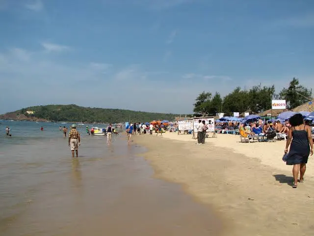
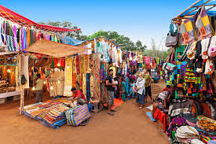

North Goa: Beaches & Bazaars
The northern side is famous for its lively atmosphere, water sports, and iconic flea markets.

Baga Beach
The most famous beach, known for its dynamic nightlife, delicious shacks, and water sports.
Read More

Anjuna Flea Market
A must-visit on Wednesdays! Shop for unique souvenirs, handicrafts, and clothes.
Read More
Fort Aguada
A 17th-century Portuguese fort offering stunning views of the Arabian Sea and the Mandovi river.
Read More